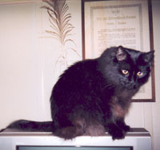

San Francisco Bay Area IWW General Membership Branch
Bay Area IWW General Membership Branch includes workers from around the Greater Bay Area.
San Francisco Bay Area GMB
- Mail - PO Box 11412, Berkeley, CA 94712
- Office - 2022 Blake Street, Berkeley, CA at Grassroots House (accessible for people with special mobility needs).
- Phone - (510) 845-0540
- Fax - (510) 845-0520
- Email - bayarea [at] iww.org
- General Membership Meetings - Call for time & location.
- Delegate Report Generator - generate a clean, readable PDF of your delegate report that you can print and tun in to our branch secretary-treasurer, or the General Secretary-Treasurer.
- Visit us on Facebook - Public Page | Membership Group
- Members only Email List - sfgmb@lists.iww.org
- Branch Bylaws - PDF File
- Bay Area Indymedia (posted for informational purposes only; indymedia is not affiliated with the IWW) - indybay.org
Branch Officers and Committee Chairs (to contact any of the officers below, please add the subject line "Attention: [insert officer and name here]".)
- Branch Secretary - Bruce V.
- Email - bayarea [at] iww.org
- Branch Treasurer - Donna
- Email - bayarea [at] iww.org
- Branch Communications Officer - Malakai
- Email - bayarea [at] iww.org
- Branch Outreach Coordinator - Cole
- Email - bayarea [at] iww.org
- Branch Organizing Department Liaison - Malakai
- Email - bayarea [at] iww.org
- General Defense Committee
- Contact: Jeff MidnightJ [at] protonmail.com
or Cole - cole [at] iww.org
- Contact: Jeff MidnightJ [at] protonmail.com
- Environmental Unionism Caucus
- Contact: Steve - intexile [at] iww.org
- Our (late) Branch Mascot - Vladimir (pictured, right)
Industrial Union Organizing Contact
- Food and Retail Workers Union (Industrial Unions 460, 640, and 660)
- Phone - (415) 789-6377
- Email - bayareafoodandretail [at] iww.org
- Marine Transport Workers iu510
- Contact - Steve
- Email - intexile [at] iww.org
- Contact - Steve
- Incarcerated Workers Organizing Committee iu613
- Contact - Cole
- Email cole [at] iww.org
- Contact - Cole
Bay Area IWW Shops
- Textile and Clothing Workers Industrial Union 410
- Stone Mountain & Daughter Fabrics (Since 2003)
- Address - 2518 Shattuck Avenue at Dwight Way in downtown Berkeley, CA 94704
- Notable - Original Call to Action
- External Link - stonemountainfabric.com
- Stone Mountain & Daughter Fabrics (Since 2003)
- Printing and Publishing House Workers Industrial Union 450
- Evergreen Printing (since 2000); Design, Offset Printing, and Digital Printing
- Address - 2412 Palmetto Street, Oakland, CA 94602
- Phone - (510) 482-4547
- Email - evergreen [at] igc.org
- Evergreen Printing (since 2000); Design, Offset Printing, and Digital Printing
- Recreational Workers Industrial Union 630
- Embarcadero Center Cinemas (Since 2010)
- Facebook Page - link
- Landmark Theaters Shattuck Cinemas (Since 2005)
- Address - 2230 Shattuck Avenue, Berkeley, CA 94704
- Facebook Page - Shattuck Iww
- External Link - landmarktheatres.com
- Embarcadero Center Cinemas (Since 2010)
- Municipal and Utility Service Workers Industrial Union 670
- Community Conservation Centers (Buyback) Recycling (Since 2001)
- Address - 669 Gilman Street (corner of 2nd Street), Berkeley , CA 94710
- Notable - Original Call to Action
- External Link - berkeleyrecycling.org
- Berkeley Ecology Center (Curbside) Recycling (Since 1989)
- Address - 1231 2nd Street (at Gilman), Berkeley, CA 94710-1005
- External Link - www.ecologycenter.org
- Community Conservation Centers (Buyback) Recycling (Since 2001)
Disclaimer: Links to external businesses (and their street addresses) are provided here for informational purposes only. The IWW receives no financial compensation from any of the commercial enterprises or public agencies listed above.
IWW Environmental Unionism Caucus
- Local Contact - link
 Notable Campaigns
Notable Campaigns
- iu510 - Neptune Jade (1997-98)
- iu530 - Stockton Independent Truckers (2004-05)
- iu670 - East Bay Depot for Creative Reuse (2003-04)
A Little History:
This branch was created by a merger in 1971 of the SF Branch G.R.U. (General Recruiting Union) founded July 1st 1927, and the Berkeley Branch G.R.U. founded Sept. 10th 1961. There were no GMB branches prior to 1969.
First letter from Headquarters to the first Branch Secretary, Richard Ellington. Sept. 11th 1961:
Dear Fellow Worker: Yesterday I sent you the branch charter for a Berkeley branch. I ordered the branch seal this morning and as soon as it is delivered I will forward it to you. I am doing all this without authorization from the Board, but since time counts I had to take it upon myself to act, and I feel fairly sure that the Board will OK the application for the charter... Yours for a world of peace and freedom W. H. Westman Secretary-Treasurer
The minutes of the third monthly meeting, December 1961, were taken in long hand on the back of a menu for the Bistro San Martin where the earliest meetings were held.